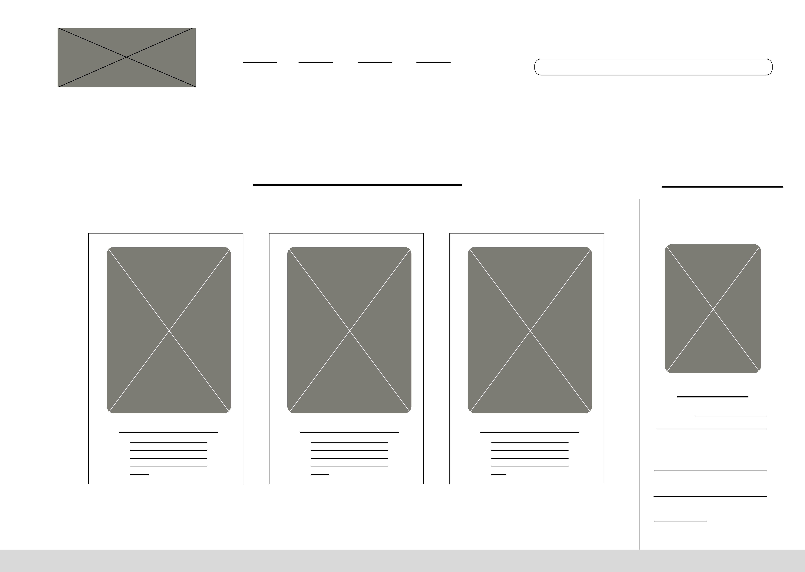

DataCorp Computer Systems
Website Redesign · UX/UI · Development
DataCorp Computer Systems
Website Redesign · UX/UI · Development
A responsive website redesign concept for a long-running computer sales and repair business. The goal was to simplify navigation and improve product browsing, modernize the visual identity, and create a consistent experience across desktop and mobile devices.

UI/UX Designer & Front-End Developer
PROJECT TYPEWebsite Redesign · UX/UI · Development
DELIVERABLESBrand Refresh, Wireframes, Prototypes, Visual Design, UI Mockups, Coded Website
TOOLSFigma, Adobe Photoshop, HTML, CSS, JavaScript
The Existing Site
The current website contains a lot of information, but it was overwhelming and difficult to navigate. Content competed for attention, making it hard for users to find products and services quickly.
 Sales Page
Sales Page
 Web Design Page
Web Design Page

Brand Identity
I refreshed the DataCorp's visual identity with a cleaner, more modern logo and a cohesive color palette that keeps the original warm yellow and brown while adding teal as a supporting color.
Planning the Experience
Low-Fidelity Wireframes were created to establish the information hierarchy, navigation, and layout for key pages before moving into visual design.
 Product Listing
Product Listing

Product Detail Service Page
Service Page

Designing for Smaller Screens
The mobile experience was designed with touch-friendly navigation and restructured layouts to ensure everything is easy to read and use on the go.
 Mobile Chassis
Mobile Chassis
 Mobile Ram
Mobile Ram
 Mobile Service
Mobile About
Mobile Service
Mobile About
 Mobile Contact
Mobile Contact

Scaling the System to Desktop
The visual system was expanded across desktop layouts to create a clean, spacious, and easy to browse shopping experience.
 Desktop Chassis
Desktop Chassis
 Desktop Ram
Desktop Ram
 Desktop Service
Desktop Service

Interactive Prototype
I built a semi-finished website to bring the design to life and demonstrate behavior, interations, and page structure.


Before and After
A cleaner design, clearer hierarchy, modern visuals, and a much better experience across all devices.


Project Reflection
This project gave me the opportunity to redesign an established website without discarding the identity of the original business. I focused on reducing visual clutter, strengthening hierarchy, creating responsive layouts, and translating the design into a functional web prototype. Looking back, I would continue refining typography, spacing and component consistency.